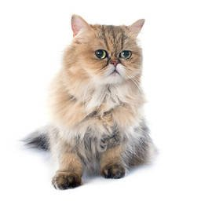

Persa

El persa suele ser un gato de tamaño medio, aunque es enorme y tiene huesos robustos. Con su gran cantidad de pelo, puede parecer más grande de lo que es en realidad. El persa es una raza de aspecto diferente. El cuerpo es corto pero grueso, con patas gruesas y un cuello corto y grueso.